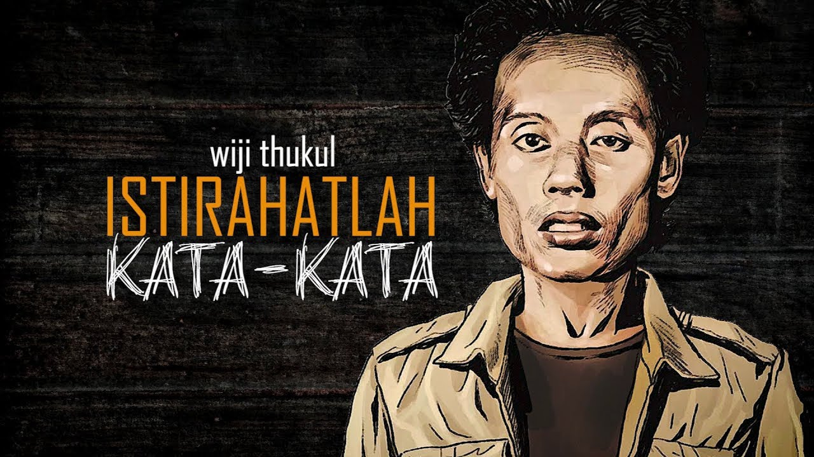
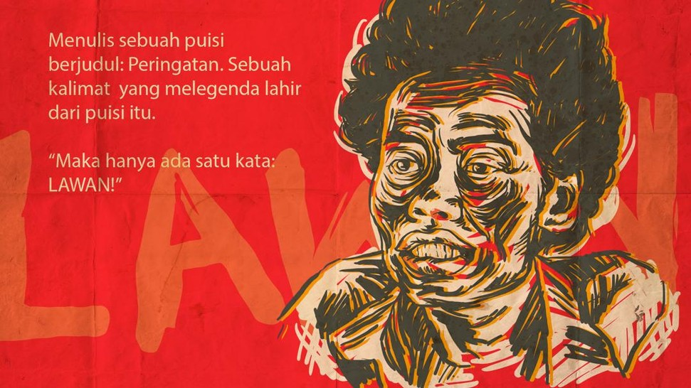
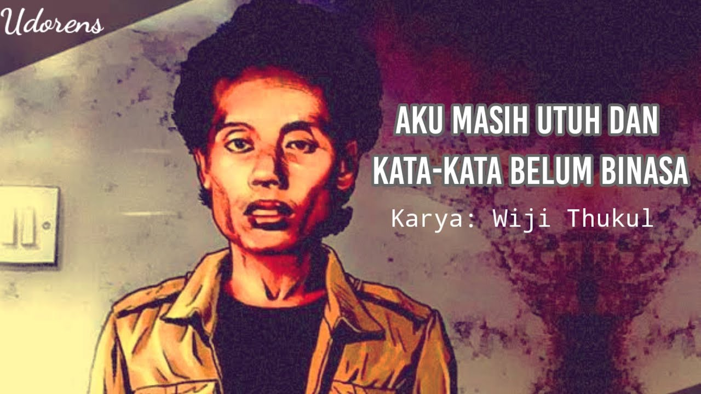
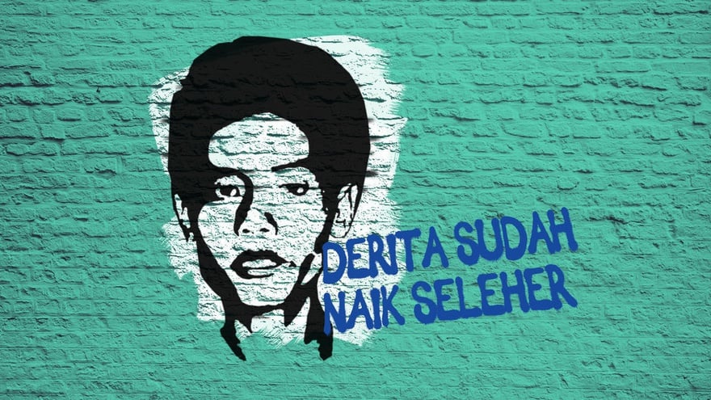
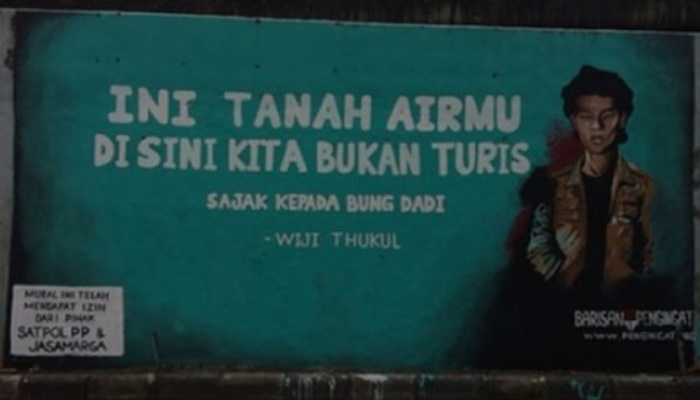

Filosofi Puisi

Puisi merupakan salah satu jenis karya sastra yang gaya bahasanya sangat ditentukan oleh irama, rima,
serta penyusunan larik dan bait. Penulisan puisi dilakukan dengan bahasa yang cermat dan pilihan
kata yang tepat, sehingga meningkatkan kesadaran orang akan pengalaman dan memberikan tanggapan
khusus lewat penataan bunyi, irama, dan pemaknaan khusus.[1] Puisi mengandung seluruh unsur sastra
di dalam penulisannya.
Penekanan pada segi estetik suatu bahasa dan penggunaan sengaja pengulangan, meter, dan rima adalah
yang mebedakan puisi dari prosa. Namun perbedaan ini masih diperdebatkan dan pandangan kaum awam
biasanya membedakan puisi dan prosa dari jumlah huruf dan kalimat dalam karya tersebut. Puisi lebih
singkat dan padat, sedangkan prosa lebih mengalir seperti mengutarakan cerita. Beberapa ahli modern
memiliki pendekatan dengan mendefinisikan puisi tidak sebagai jenis literatur tetapi sebagai
perwujudan imajinasi manusia, yang menjadi sumber segala kreativitas. Selain itu, puisi juga
merupakan curahan isi hati seseorang yang membawa orang lain masuk ke dalam keadaan hatinya.
Di dalam puisi juga biasa disisipkan majas yang membuat puisi itu semakin indah. Majas tersebut juga
bermacam-macam, salah satunya adalah sarkasme yaitu sindiran langsung dengan kasar.
Di beberapa daerah di Indonesia puisi juga sering dinyanyikan dalam bentuk pantun.
Baris-baris pada puisi dapat berbentuk apa saja (melingkar, zig zag, dan lain-lain). Hal tersebut
merupakan salah satu cara penulis untuk menunjukkan pemikirannya. Puisi kadang hanya berisi satu
kata/suku kata yang terus diulang-ulang. Bagi pembaca, hal tersebut mungkin membuat puisi menjadi
tidak atau kurang bisa dimengerti. Tetapi penulis selalu memiliki alasan untuk segala 'keanehan'
yang diciptakannya. Tak ada batasan bagi seorang penulis dalam menciptakan sebuah puisi. Ada
beberapa perbedaan antara puisi lama dan puisi baru.
Tokoh

Wiji Thukul
Wiji Widodo nama aslinya, dilahirkan dari keluarga katolik, di Sorogenen, Solo 26 Agustus 1962.
Bapaknya seorang penarik becak, ibunya kadang menjual ayam bumbu untuk membantu ekonomi keluarga.
Nama “Thukul” yang berarti tumbuh, disematkan kepadanya oleh Cempe Lawu Warta ketika ia aktif
berteater dengan Sarang Teater Jagat (Jagalan Tengah). Wiji Thukul, artinya biji yang tumbuh..
Hidup di tengah-tengah kaum marginal, ia banyak mengamati dan merekam realitas rakyat pinggiran
melalui bait-bait puisi. Sejak duduk di bangku sekolah dasar, Thukul sudah mulai gemar menulis
puisi.
Lulus sekolah dasar, ia lanjutkan sekolah di SMP Negeri 8 Solo. Semasa duduk di bangku SMP, ia mulai
tertarik menekuni dunia teater. Ia pun meneruskan sekolahnya di Sekolah Menengah Karawitan Indonesia
(SMKI) jurusan tari.
Thukul dan Sipon sama-sama berasal dari kaum marjinal, mereka lalu tinggal di kampung Kalangan yang
terkenal sering dilanda banjir ketika musim hujan. Lingkungannya pun dipenuhi rumah-rumah petak
kecil yang berjejal sehingga terkesan kumuh.
Dengan pernikahannya dengan Sipon, Thukul dikaruniai seorang putri, Fitri Nganthi Wani, dan seorang
anak laki-laki, Fajar Merah. Fajar Merah kini pun melanjutkan perjuangan ayahnya melalui musik,
dengan melagukan puisi-puisi ayahnya, Wiji Thukul.
Adapun puisi karya Wiji Thukul antara lain adalah :
Peringatan
Aku Masih Utuh dan Kata-Kata Belum Binasa
Derita Sudah Naik Seleher
Sajak Kepada Bung Dadi
Karya
Kata-kata dalam puisi Thukul memberikan penafsiran berbeda tentang puisi. Jika seni diartikan sebagai
keindahan, maka seni sastra dalam definisi seorang Wiji Thukul, mana bisa diartikan sebagai
keindahan?
Hidupnya dipenuhi dengan berbagai kepahitan. Dimulai latar belakangya yang hanya bagian dari kaum
marginal, sampai aktivitasnya yang dipenuhi dengan getirnya memperjuangkan keadilan dan melawan
kotornya kezaliman penguasa.
Gaya bahasa dalam puisi Thukul sama sekali tak mengandung keindahan kata-kata kiasan dan majas
perumpamaan. Ia mengupas realitas sosial rakyat pinggiran melalui puisinya, dan tidak mungkin
diekspresikan dengan diksi-diksi penuh majas nan romantis.
Dengan bahasa yang sederhana, Thukul menginginkan semua orang dari kalangan intelek maupun proletar
bisa memahaminya secara jelas. Dengan bahasa yang sederhana, puisi-puisinya masih tetap digaungkan
sampai sekarang seolah menjadi semacam kutukan bagi penguasa zalim.
PERINGATAN

Jika rakyat pergi
Ketika penguasa pidato
Kita harus hati-hati
Barangkali mereka putus asa
Kalau rakyat bersembunyi
Dan berbisik-bisik
Ketika membicarakan masalahnya sendiri
Penguasa harus waspada dan belajar mendengar
Bila rakyat berani mengeluh
Itu artinya sudah gawat
Dan bila omongan penguasa
Tidak boleh dibantah Kebenaran pasti terancam
Apabila usul ditolak tanpa ditimbang
Suara dibungkam kritik dilarang tanpa alasan
Dituduh subversif dan mengganggu keamanan
Maka hanya ada satu kata: lawan!.
(Wiji Thukul, 1986)
AKU MASIH UTUH DAN KATA-KATA BELUM BINASA

Aku bukan artis pembuat berita
Tapi aku memang selalu kabar buruk buat penguasa
Puisiku bukan puisi
Tapi kata-kata gelap
Yang berkeringat dan berdesakan mencari jalan
Ia tak mati-mati, meski bola mataku diganti
Ia tak mati-mati, meski bercerai dengan rumah
Ditusuk-tusuk sepi, ia tak mati-mati
telah kubayar yang dia minta
umur-tenaga-luka
Kata-kata itu selalu menagih
Padaku ia selalu berkata, kau masih hidup
Aku memang masih utuh
dan kata-kata belum binasa
(Wiji Thukul, 18 juni 1997)
DERITA SUDAH NAIK SELEHER

kaulempar aku dalam gelap
hingga hidupku menjadi gelap
kausiksa aku sangat keras
hingga aku makin mengeras
kau paksa aku terus menunduk
tapi keputusan tambah tegak
darah sudah kau teteskan
dari bibirku
luka sudah kau bilurkan
ke sekujur tubuhku
cahaya sudah kau rampas
dari biji mataku
derita sudah naik seleher
kau menindas
sampai di luar batas
(Wiji Thukul, 17 November 1996)
SAJAK KEPADA BUNG DADI

ini tanahmu juga
rumah-rumah yang berdesakan
manusia dan nestapa
kampung halaman gadis-gadis muda
buruh-buruh berangkat pagi pulang sore
dengan gaji tak pantas
kampung orang-orang kecil
yang dibikin bingung
oleh surat-surat izin dan kebijaksanaan
dibikin tunduk mengangguk
bungkuk
Ini Bisa Selamatkan Penderita Diabetes Sekali & Selamanya
Diabtiq
ini tanah airmu
di sini kita bukan turis.
(Wiji Thukul, Solo-Sorogenen, Malam Pemilu, 1987)